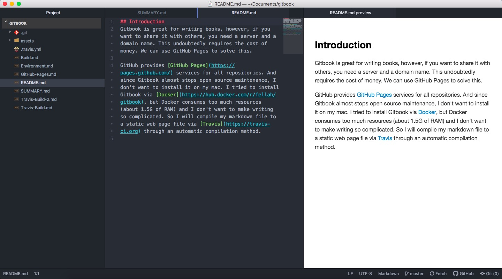

<!DOCTYPE HTML>
<html lang="" >
    <head>
        <meta charset="UTF-8">
        <meta content="text/html; charset=utf-8" http-equiv="Content-Type">
        <title>Environment · GitBook</title>
        <meta http-equiv="X-UA-Compatible" content="IE=edge" />
        <meta name="description" content="">
        <meta name="generator" content="GitBook 3.2.3">
        
        
        
    
    <link rel="stylesheet" href="gitbook/style.css">

    
            
                
                <link rel="stylesheet" href="gitbook/gitbook-plugin-search-pro/search.css">
                
            
                
                <link rel="stylesheet" href="gitbook/gitbook-plugin-katex/katex.min.css">
                
            
                
                <link rel="stylesheet" href="gitbook/gitbook-plugin-splitter/splitter.css">
                
            
                
                <link rel="stylesheet" href="gitbook/gitbook-plugin-expandable-chapters-small/expandable-chapters-small.css">
                
            
                
                <link rel="stylesheet" href="gitbook/gitbook-plugin-code/plugin.css">
                
            
                
                <link rel="stylesheet" href="gitbook/gitbook-plugin-anchor-navigation-ex/style/plugin.css">
                
            
                
                <link rel="stylesheet" href="gitbook/gitbook-plugin-highlight/website.css">
                
            
                
                <link rel="stylesheet" href="gitbook/gitbook-plugin-fontsettings/website.css">
                
            
        

    

    
        
    
        
    
        
    
        
    
        
    
        
    

        
    
    
    <meta name="HandheldFriendly" content="true"/>
    <meta name="viewport" content="width=device-width, initial-scale=1, user-scalable=no">
    <meta name="apple-mobile-web-app-capable" content="yes">
    <meta name="apple-mobile-web-app-status-bar-style" content="black">
    <link rel="apple-touch-icon-precomposed" sizes="152x152" href="gitbook/images/apple-touch-icon-precomposed-152.png">
    <link rel="shortcut icon" href="gitbook/images/favicon.ico" type="image/x-icon">

    
    <link rel="next" href="Git-Build.html" />
    
    
    <link rel="prev" href="./" />
    

    </head>
    <body>
        
<div class="book">
    <div class="book-summary">
        
            
<div id="book-search-input" role="search">
    <input type="text" placeholder="Type to search" />
</div>

            
                <nav role="navigation">
                


<ul class="summary">
    
    

    

    
        
        
    
        <li class="chapter " data-level="1.1" data-path="./">
            
                <a href="./">
            
                    
                    Gitbook update with Travis CI on Github Pages
            
                </a>
            

            
            <ul class="articles">
                
    
        <li class="chapter active" data-level="1.1.1" data-path="Environment.html">
            
                <a href="Environment.html">
            
                    
                    Environment
            
                </a>
            

            
        </li>
    
        <li class="chapter " data-level="1.1.2" data-path="Git-Build.html">
            
                <a href="Git-Build.html">
            
                    
                    Gitbook Project Build
            
                </a>
            

            
        </li>
    
        <li class="chapter " data-level="1.1.3" data-path="Travis-Setting.html">
            
                <a href="Travis-Setting.html">
            
                    
                    Travis Setting
            
                </a>
            

            
        </li>
    
        <li class="chapter " data-level="1.1.4" data-path="Travis-Build.html">
            
                <a href="Travis-Build.html">
            
                    
                    Travis Build
            
                </a>
            

            
        </li>
    
        <li class="chapter " data-level="1.1.5" data-path="GitHub-Pages.html">
            
                <a href="GitHub-Pages.html">
            
                    
                    GitHub Pages
            
                </a>
            

            
        </li>
    
        <li class="chapter " data-level="1.1.6" data-path="Bug.html">
            
                <a href="Bug.html">
            
                    
                    Bug
            
                </a>
            

            
        </li>
    

            </ul>
            
        </li>
    

    

    <li class="divider"></li>

    <li>
        <a href="https://www.gitbook.com" target="blank" class="gitbook-link">
            Published with GitBook
        </a>
    </li>
</ul>


                </nav>
            
        
    </div>

    <div class="book-body">
        
            <div class="body-inner">
                
                    

<div class="book-header" role="navigation">
    

    <!-- Title -->
    <h1>
        <i class="fa fa-circle-o-notch fa-spin"></i>
        <a href="." >Environment</a>
    </h1>
</div>


                    <div class="page-wrapper" tabindex="-1" role="main">
                        <div class="page-inner">
                            
<div id="book-search-results">
    <div class="search-noresults">
    
                                <section class="normal markdown-section">
                                
                                <div id="anchor-navigation-ex-navbar"><i class="fa fa-navicon"></i><ul><ul><li><span class="title-icon "></span><a href="#outline"><b>1.1. </b>Outline</a></li><li><span class="title-icon "></span><a href="#git-installation"><b>1.2. </b>Git Installation</a></li><li><span class="title-icon "></span><a href="#atom-installation"><b>1.3. </b>Atom Installation</a></li></ul></ul></div><a href="#" id="anchorNavigationExGoTop"><i class="fa fa-arrow-up"></i></a><h2 id="outline"><a name="outline" class="anchor-navigation-ex-anchor" href="#outline"><i class="fa fa-link" aria-hidden="true"></i></a>1.1. Outline</h2>
<ul>
<li>git installation</li>
<li>Atom installation</li>
</ul>
<h2 id="git-installation"><a name="git-installation" class="anchor-navigation-ex-anchor" href="#git-installation"><i class="fa fa-link" aria-hidden="true"></i></a>1.2. Git Installation</h2>
<p>install <a href="https://brew.sh/index_zh-cn" target="_blank">Homebrew</a> by using commond:</p>
<pre><code>/usr/bin/ruby -e &quot;$(curl -fsSL https://raw.githubusercontent.com/Homebrew/install/master/install)&quot;
</code></pre><p>and using Homebrew to install git:</p>
<pre><code>brew install git
</code></pre><blockquote>
<p>No need to update. It will update automatically before any installation.</p>
</blockquote>
<h2 id="atom-installation"><a name="atom-installation" class="anchor-navigation-ex-anchor" href="#atom-installation"><i class="fa fa-link" aria-hidden="true"></i></a>1.3. Atom Installation</h2>
<p>Go to the <a href="https://atom.io/" target="_blank">Atom</a> to download the latest version.
And also install essential packages:</p>
<pre><code>language-markdown
markdown-preview-enhanced
markdown-table-editor
</code></pre><p></p>

                                
                                </section>
                            
    </div>
    <div class="search-results">
        <div class="has-results">
            
            <h1 class="search-results-title"><span class='search-results-count'></span> results matching "<span class='search-query'></span>"</h1>
            <ul class="search-results-list"></ul>
            
        </div>
        <div class="no-results">
            
            <h1 class="search-results-title">No results matching "<span class='search-query'></span>"</h1>
            
        </div>
    </div>
</div>

                        </div>
                    </div>
                
            </div>

            
                
                <a href="./" class="navigation navigation-prev " aria-label="Previous page: Gitbook update with Travis CI on Github Pages">
                    <i class="fa fa-angle-left"></i>
                </a>
                
                
                <a href="Git-Build.html" class="navigation navigation-next " aria-label="Next page: Gitbook Project Build">
                    <i class="fa fa-angle-right"></i>
                </a>
                
            
        
    </div>

    <script>
        var gitbook = gitbook || [];
        gitbook.push(function() {
            gitbook.page.hasChanged({"page":{"title":"Environment","level":"1.1.1","depth":2,"next":{"title":"Gitbook Project Build","level":"1.1.2","depth":2,"path":"Git-Build.md","ref":"Git-Build.md","articles":[]},"previous":{"title":"Gitbook update with Travis CI on Github Pages","level":"1.1","depth":1,"path":"README.md","ref":"README.md","articles":[{"title":"Environment","level":"1.1.1","depth":2,"path":"Environment.md","ref":"Environment.md","articles":[]},{"title":"Gitbook Project Build","level":"1.1.2","depth":2,"path":"Git-Build.md","ref":"Git-Build.md","articles":[]},{"title":"Travis Setting","level":"1.1.3","depth":2,"path":"Travis-Setting.md","ref":"Travis-Setting.md","articles":[]},{"title":"Travis Build","level":"1.1.4","depth":2,"path":"Travis-Build.md","ref":"Travis-Build.md","articles":[]},{"title":"GitHub Pages","level":"1.1.5","depth":2,"path":"GitHub-Pages.md","ref":"GitHub-Pages.md","articles":[]},{"title":"Bug","level":"1.1.6","depth":2,"path":"Bug.md","ref":"Bug.md","articles":[]}]},"dir":"ltr"},"config":{"gitbook":"*","theme":"default","variables":{},"plugins":["-sharing","-lunr","-search","search-pro","katex","splitter","expandable-chapters-small","code","anchor-navigation-ex"],"pluginsConfig":{"splitter":{},"search-pro":{},"code":{"copyButtons":true},"katex":{},"fontsettings":{"theme":"white","family":"sans","size":2},"highlight":{},"anchor-navigation-ex":{"associatedWithSummary":true,"float":{"showLevelIcon":true,"level1Icon":"","isRewritePageTitle":true,"level2Icon":"","level3Icon":"","tocLevel1Icon":"fa fa-hand-o-right","tocLevel2Icon":"fa fa-hand-o-right","tocLevel3Icon":"fa fa-hand-o-right","floatIcon":"fa fa-navicon"},"mode":"float","multipleH1":true,"pageTop":{"level1Icon":"","level2Icon":"","level3Icon":"","showLevelIcon":false},"printLog":false,"showGoTop":true,"showLevel":true},"expandable-chapters-small":{},"theme-default":{"styles":{"website":"styles/website.css","pdf":"styles/pdf.css","epub":"styles/epub.css","mobi":"styles/mobi.css","ebook":"styles/ebook.css","print":"styles/print.css"},"showLevel":false}},"structure":{"langs":"LANGS.md","readme":"README.md","glossary":"GLOSSARY.md","summary":"SUMMARY.md"},"pdf":{"pageNumbers":true,"fontSize":12,"fontFamily":"Arial","paperSize":"a4","chapterMark":"pagebreak","pageBreaksBefore":"/","margin":{"right":62,"left":62,"top":56,"bottom":56}},"styles":{"website":"styles/website.css","pdf":"styles/pdf.css","epub":"styles/epub.css","mobi":"styles/mobi.css","ebook":"styles/ebook.css","print":"styles/print.css"}},"file":{"path":"Environment.md","mtime":"2019-05-02T02:57:11.353Z","type":"markdown"},"gitbook":{"version":"3.2.3","time":"2019-05-02T02:58:15.293Z"},"basePath":".","book":{"language":""}});
        });
    </script>
</div>

        
    <script src="gitbook/gitbook.js"></script>
    <script src="gitbook/theme.js"></script>
    
        
        <script src="gitbook/gitbook-plugin-search-pro/jquery.mark.min.js"></script>
        
    
        
        <script src="gitbook/gitbook-plugin-search-pro/search.js"></script>
        
    
        
        <script src="gitbook/gitbook-plugin-splitter/splitter.js"></script>
        
    
        
        <script src="gitbook/gitbook-plugin-expandable-chapters-small/expandable-chapters-small.js"></script>
        
    
        
        <script src="gitbook/gitbook-plugin-code/plugin.js"></script>
        
    
        
        <script src="gitbook/gitbook-plugin-fontsettings/fontsettings.js"></script>
        
    

    </body>
</html>

